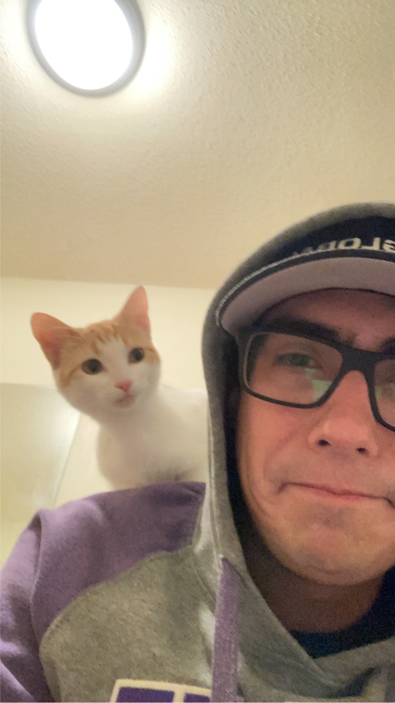

Thomas Vadeboncoeur

Summary
I am a hard working, dedicated, and self-motivated individual with extensive experience in customer service, and NDT.
Education
Mount Royal University:
Bachelor of Business Administration, Major: Management. 2015-2017
Work Experience
Vision Integrity Engineering Ltd.
- NDT Technician
- Perform safety critical inspections on welds, metal, and various structures to ensure their compliance with appropriate safety codes.
- Tickets:
- Magnetic Particle level 2
- Ultrasonic Level 1
- CEDO
- MFL trainer for company
- Participating in the company’s Health and Safety Committee
The UPS Store
- Business Associate
- Evaluating and recommending the best solutions for our customers needs when shipping worldwide.
- Assisting the Owner/Operator in developing and implementing new sales tactics.
- Adapting to new technologies quickly and efficiently.
Charm Diamond Centre
- Sales Associate
- Selling high quality and value merchandise on a walk in basis.
- Key holder with responsibilities including leading opening and closing procedures.
- Working directly with clients on designing and commissioning custom jewelry.
Skills
- Customer Service ⭐️⭐️⭐️⭐️
- Attention to Detail ⭐️⭐️⭐️⭐️⭐️
- Self Motivation ⭐️⭐️⭐️⭐️
- Microsoft Office Suite ⭐️⭐️⭐️
Awards and Certifications
- Customer Service Training - YMCA 2009
- Agent of the Year - Clarion Hotel and Conference Centre 2018
Others